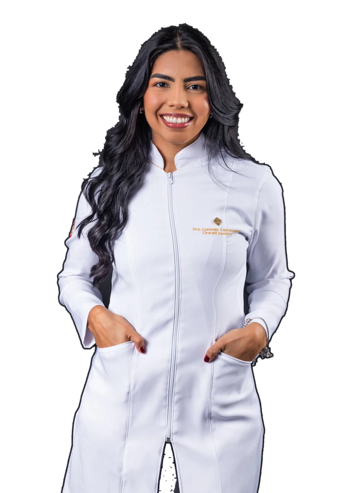
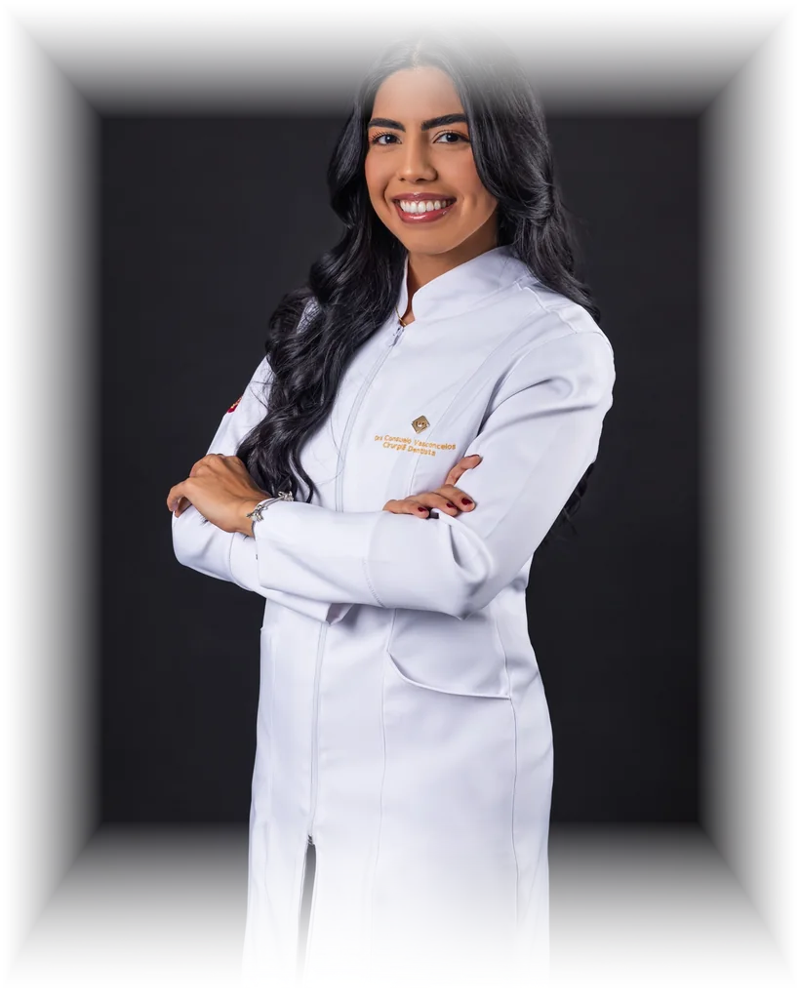
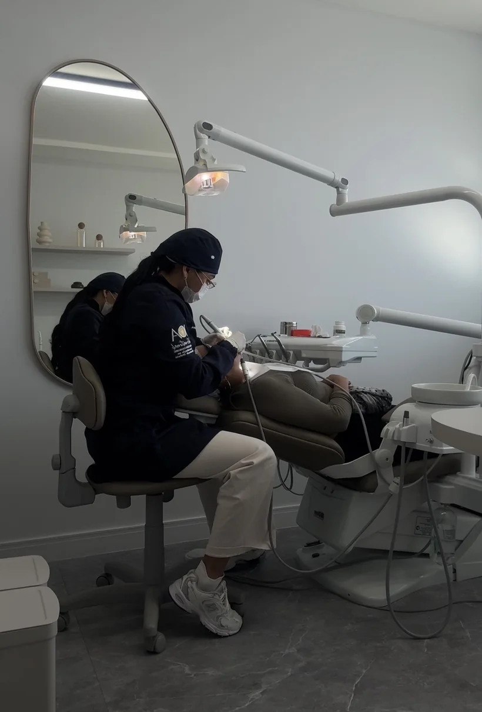
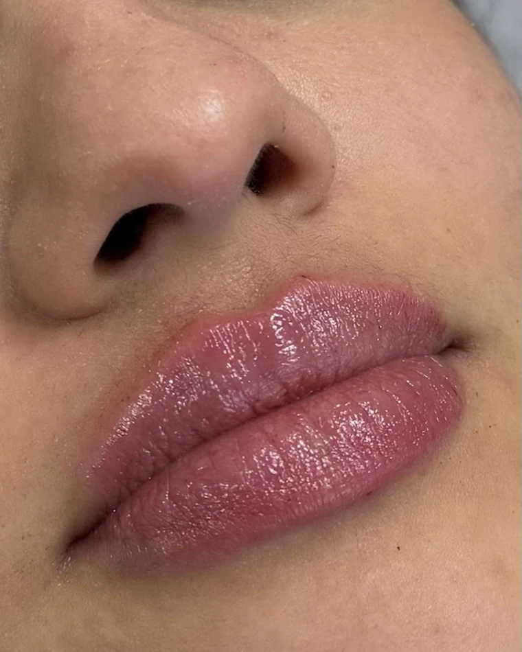
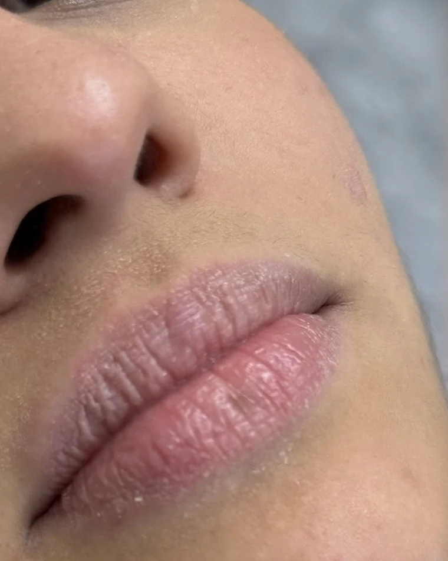

Profilaxia (Limpeza Dental)
Remove placa e tártaro, prevenindo cáries e mantendo a saúde bucal em dia.
Odontologia & Estética Avançada · Itajaí-SC
E começa pelo cuidado — com você mesma. Odontologia clínica, estética avançada e harmonização facial com atendimento humanizado e resultados naturais.


Sobre mim
Sou a Dra. Consuelo Vasconcelos, cirurgiã-dentista graduada pela UNISUL. Natural de Manaus, escolhi Itajaí para construir minha trajetória profissional. Minha atuação reúne odontologia clínica, Cirurgia Oral Menor e Harmonização Facial — três frentes que conduzo de forma integrada, porque saúde, função e estética não se resolvem separadas. Acredito que cada sorriso é único, por isso meu trabalho é baseado em atendimento humanizado e resultados naturais.
Desde cedo me encantei pela odontologia como forma de cuidar das pessoas, não só da saúde bucal, mas de como elas se sentem ao sorrir. Hoje, unindo técnica e humanização, ampliei esse cuidado também para a estética facial, buscando sempre resultados naturais e que respeitam a individualidade de cada paciente.
Conheça minha missãoMinha missão
Cada sorriso é único. O que se repete é o cuidado: entender antes de tratar, planejar antes de executar, e respeitar o que já é seu.
Agendar minha avaliaçãoTécnicas que aliam as três coisas. Um resultado bonito que não se sustenta na função e na saúde não é um bom resultado.
Para cada paciente e sua rotina. O tratamento precisa caber na sua vida — no seu tempo, no seu dia a dia.
Do diagnóstico ao resultado. Sem fórmula pronta: o caminho é montado a partir do que o seu rosto e o seu sorriso pedem.
Autoestima e presença pessoal. O que muda não é só o espelho — é como você chega nos lugares.
Procedimentos
Meu trabalho é entender o que combina com você antes de qualquer tratamento.
Remove placa e tártaro, prevenindo cáries e mantendo a saúde bucal em dia.
Devolve forma e função aos dentes com resina de alta qualidade, de forma discreta e natural.
Técnica segura e progressiva que uniformiza o tom dos dentes, sem agredir o esmalte.
Procedimento realizado com conforto e segurança, sempre priorizando seu bem-estar.
Relaxa a musculatura facial, suavizando linhas de expressão com resultado natural.
Realça lábios e contornos faciais, respeitando as proporções do seu rosto.
Estimula a produção natural de colágeno, melhorando firmeza e qualidade da pele com o tempo.
Estimula a regeneração da pele, melhorando textura, poros e viço de forma natural.
Toda indicação depende de avaliação presencial. Resultados variam conforme as condições clínicas de cada paciente. Esta página tem caráter informativo e não substitui a consulta odontológica.
Resultado
Sorriso, contorno facial e expressão trabalham juntos, criando equilíbrio natural, sem exageros.
Técnicas que respeitam suas características, valorizando o que já é seu, não substituindo.
Mais confiança pra sorrir em fotos, em reuniões, em qualquer situação, porque você se sente bem com o que vê no espelho.
A clínica

Consultório estruturado no Centro de Itajaí para as três frentes que conduzo. O lugar do diagnóstico é o mesmo da execução e do retorno — o seu caso não muda de mãos no meio do caminho.
Resultados


Arraste a linha para comparar
As avaliações são públicas e ficam no perfil do consultório no Google — escritas pelas próprias pacientes, sem intermediação.
Ler as avaliações no GoogleDúvidas frequentes
Não achou a sua pergunta? Me chame no WhatsApp.
Falar no WhatsAppAvaliamos sua estrutura facial, harmonia entre sorriso e expressão, e principais pontos que você gostaria de trabalhar. A partir disso, montamos um planejamento personalizado, sem fórmula pronta.
Sim, o objetivo é valorizar suas características, não mudar quem você é. Técnicas que respeitam seu rosto e entregam equilíbrio, não exagero.
Não. Muitas pacientes chegam só com uma inquietação: “algo incomoda, mas não sei o quê”. Na consulta a gente descobre juntas o caminho certo.
A primeira consulta é onde tudo começa. Vamos entender juntas o que seu rosto e seu sorriso pedem.
Quero agendar minha avaliaçãoLocalização
Localização privilegiada em Itajaí-SC, com fácil acesso no calçadão da Hercílio Luz.
Me acompanhe nas redes
Preencha e a mensagem abre pronta no seu WhatsApp — você só aperta enviar.